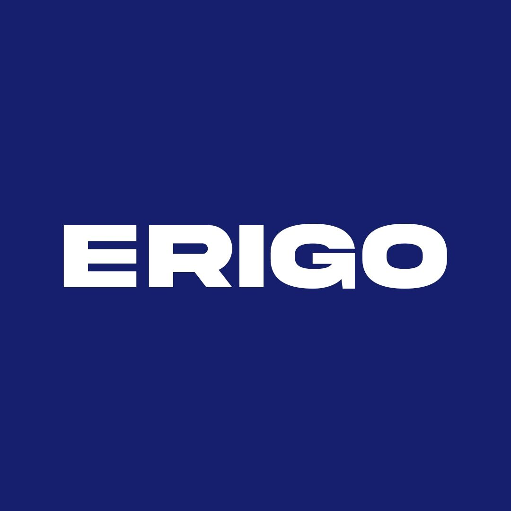
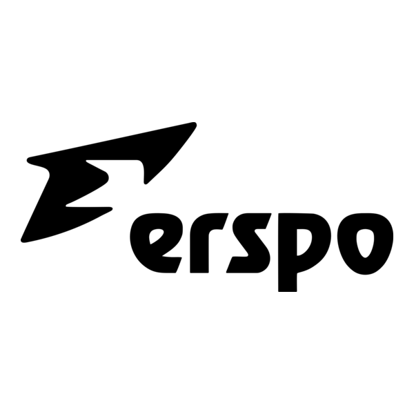
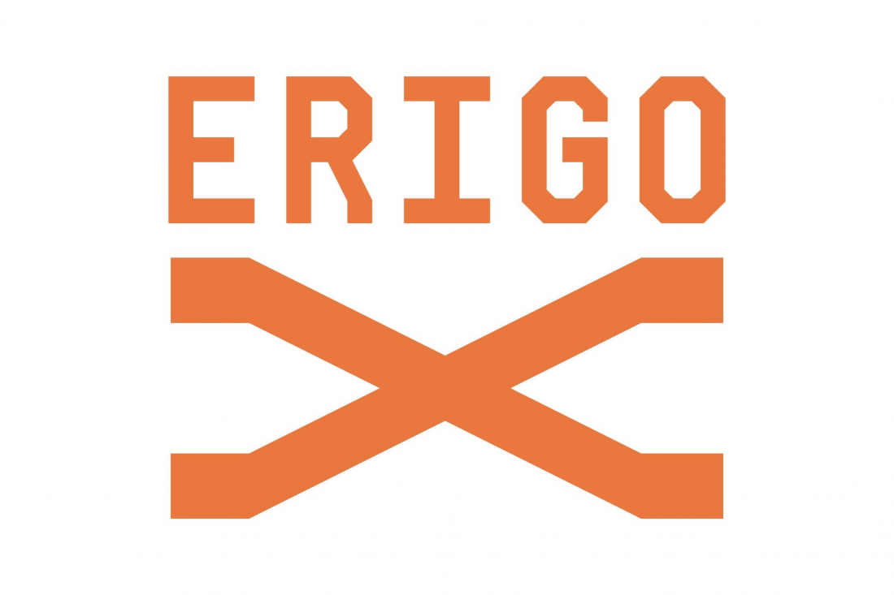

FOUNDER & ENTREPRENEUR
Muhammad Sadad merupakan pengusaha asal Indonesia yang dikenal sebagai pendiri Erigo, salah satu brand fashion lokal Indonesia.
Berawal dari bisnis fashion berskala kecil, Muhammad Sadad mengembangkan Erigo hingga dikenal secara luas dan mampu membawa brand lokal Indonesia ke pasar internasional.
Projects

ERIGO
Brand fashion lokal yang didirikan Muhammad Sadad. ERIGO berfokus pada fashion kasual dan streetwear serta berkembang hingga dikenal di pasar internasional.

ERSPO
Brand sportswear yang dikembangkan Muhammad Sadad untuk menghadirkan pakaian dan apparel olahraga lokal dengan standar internasional.

ERIGO X
Lini fashion Erigo yang dikembangkan untuk membawa brand ke panggung internasional dan tampil dalam New York Fashion Week.
Contact
Punya pendapat atau ingin mengirim pesan? Isi form berikut.